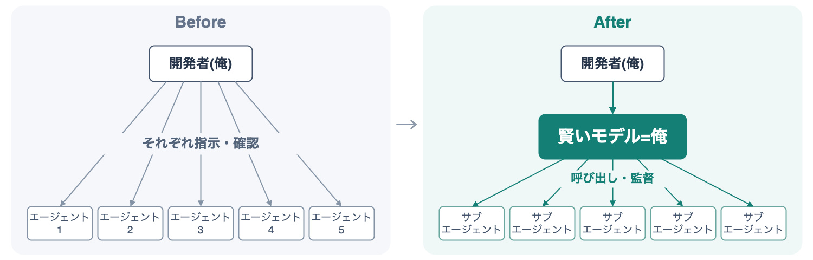

オーケストレータ 俺
- Event:
【AI駆動開発】AI自走環境整備・運用スペシャル #6
- Presented:
2026/09/15 nikkie （スペース連打 or 矢印キーでめくります）
オーケストレータ 俺、とは [1]
賢いモデル にサブエージェントを 監督 させている
自分を複製できた感覚 を共有したい
お前、誰よ
nikkie（にっきー） [2] ・Codex Ambassador (Tokyo)・Devin Ambassador
機械学習エンジニア・Speeda AI Agent 開発（A2A・MCP・Slackbot 提供）
関心は「夜のブルーオーシャン」
今やコーディングエージェントに任せておける [3]
ランチ休憩 の裏でタスクを振り、それができた状態で再開
家事 の裏で個人開発進める
エージェントがエージェントを呼ぶ
Fable 5以降で成立した 自走の新たな選択肢
動的にサブエージェント呼び出し（dynamic workflows）
A second strategy: use Fable 5 as an orchestrator.
— ClaudeDevs (@ClaudeDevs) 2026年7月7日
Fable 5 plans and delegates to workers (Sonnet 5).
Most tokens are billed at the lower worker rate. pic.twitter.com/cwDZJSXekn
I talk to engineers at other companies every day and hear the same thing: one person is 10x'ing their output with Claude but the rest of the org hasn't caught up.
— Boris Cherny (@bcherny) 2026年7月17日
Watching teams adopt AI, I keep seeing the same 4 steps.
I mapped them out here: Steps of AI Adoption…
Steps of AI Adoption (boris-san [4]) 抜粋 [5]
Step 2：1人のエンジニアが一度に5-10のエージェント
Step 3へ：「ClaudeにClaudeを起動させる」
skillをFableに与えた
Fableはお高い ので高額請求が怖い
「Fable、あなたは 監督に徹して」
「調査はOpus、実装はSonnet」
ご参考にどうぞ
/plugin marketplace add https://github.com/ftnext/claude-code
/plugin install supervised-delegation@nikkie-marketplaceInvestigation → Opus
Implementation → Sonnet
PR babysitting → Opus
Supervision → you個人開発OSSのリポジトリを渡して
「まずこの作業の監督にあたって」
「同時にこの実装も進めたい」
git worktreeも使って 同時進行 してくれる
やりたいことがごちゃごちゃしていても
「（Fableに）提案内容でお願いします。ちなみにここが気になるんだけど」
適切に分割 して実装と調査を並列で進めてくれた
調査を踏まえて提案してくれる
自分を複製 できた感覚 [6]
Fableは相当賢く、私の代わりに判断を任せられる
裏で動くサブエージェントを監督してるだけなので、即レス してくれる
{kind=link}

オーケストレータ 俺、適用 可能性
Fable以外でも
GPT-6 Astra
Codex tip: Use Astra as an orchestrator of threads and create + send tasks over to Sol/ Luna
— Vaibhav (VB) Srivastav (@reach_vb) 2026年9月14日
Once done, ask it to set up a heartbeat every 15 minutes to check in and course correct as needed
Particularly for long running tasks it’s useful to reduce usage & add verifiability
GPT-6 Astra [7]
GPT-5.6 Sol, Terra, Lunaもまだまだ現役（Recommended models）
Astraに呼び出させましょう
⚠️AstraにAstraをサブエージェントに呼び出させるとPlusの枠はマッハで消える
Devin can now Manage Devins （いけるはず）
Devin sessions can spin up other managed subagents to orchestrate complex workflows. These child sessions have their own VMs, and can kick off their own subagents. Now, you can easily manage these nested agents from your sidebar. pic.twitter.com/reWS2vpxMy
— Cognition (@cognition) 2026年8月26日
まとめ🌯 オーケストレータ 俺
自走の新たな選択肢：賢いモデルにサブエージェントを監督させる（プロンプトやskillで指示）
優秀なマネージャの手が空いてる状態になって、いいぞ
このマネージャを 複数使役 で100X？！
ご清聴ありがとうございました
Happy Development ❤️🤖（ステッカードゾー）
話したい：チームに適用するには？